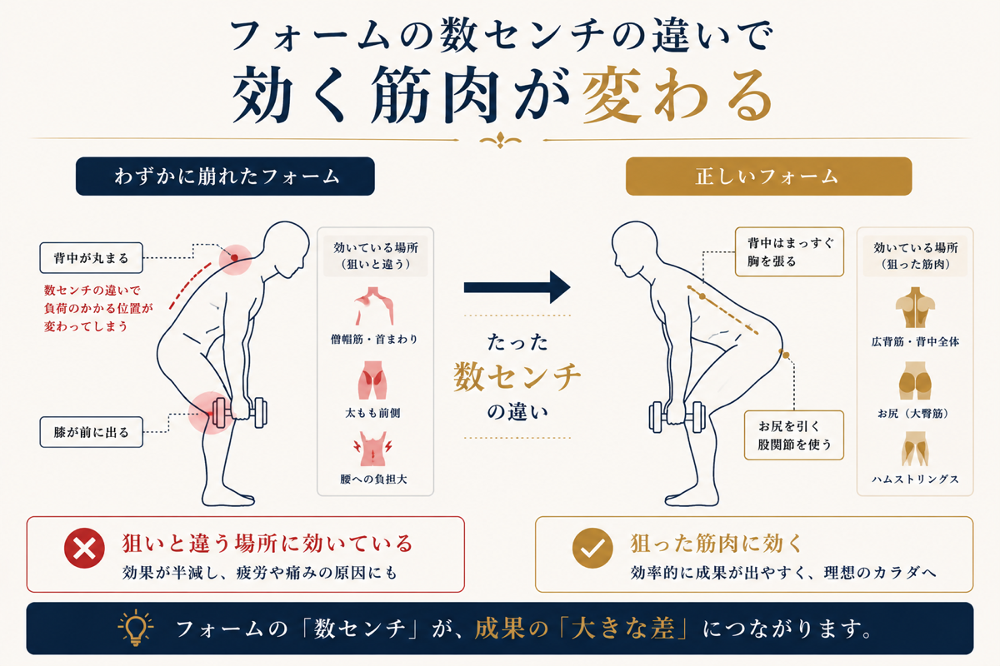

YouTubeで解説を見て、ジムのマシンをひと通り触って、それなりに続けている。なのに「筋トレしても効かない」「効果が出ない」——自己流でトレーニングしている方から、いちばんよく聞くお悩みです。実はこれ、努力や根性が足りないのではなく、フォームが数センチずれているだけのことがほとんどです。この記事では、筋トレが効かない原因と、なぜプロの目が入ると効き方が変わるのかを、吉祥寺で完全個室ジムを運営する立場から解説します。
筋トレが「効かない・効果が出ない」3つの原因
① フォームが数センチずれて、狙った筋肉に効いていない
同じ種目でも、肘の位置・背中の角度・重心のかけ方が数センチ違うだけで、効く場所はまったく変わります。「胸に効かせたいのに腕ばかり疲れる」「背中に効かない」「大胸筋に効いている感じがしない」——これはたいてい、鍛えたい筋肉ではなく別の部位で動作を代償（ごまかし）しているサインです。鏡を見てもこのズレは自分では気づけません。
② 重量・回数の設定が自分の身体に合っていない
ネット上の「◯kg×10回」はあくまで一般論です。あなたの可動域・筋力・その日のコンディションに対して重すぎれば、フォームが崩れて効かないうえに怪我のもと。軽すぎれば刺激が足りません。適正値は本来、一人ひとり違います。
③ メニューが「積み上がって」いない
気分やその日の気分で種目を選んでいると、成長がリセットされ続けます。身体はゴールから逆算して負荷を段階的に上げていくことで変わります。自己流でいちばん抜けやすいのが、この「順序の設計」です。

なぜフォームが数センチずれると「効かない」のか
筋肉は、関節がどの角度で動くかによって、伸び縮みする部位が変わります。つまりフォームのわずかな違いは、「どの筋肉に負荷が乗るか」を切り替えるスイッチのようなものです。当ジムでも、お客様のグリップや足の位置をほんの少し直しただけで「今までと全然違う場所に効いている」と実感される場面は日常的にあります。実際に体験された方からも、「これまでの常識が覆された」「数センチ位置をずらすだけで効果を感じた」という声をよくいただきます。
逆に言えば、この数センチを外したまま何ヶ月も続けると、努力の量に対して結果が驚くほど小さくなります。自己流の"惜しさ"の正体はここにあります。
自己流を卒業すると、何が変わるか
- 同じ時間で結果が変わる——効く場所に正しく効かせられるので、1回のトレーニングの密度が上がります
- 怪我をしにくくなる——代償動作が減り、関節や腰への無理な負担が抜けます
- 迷いがなくなる——「これで合っているのか」という不安がなくなり、続けやすくなります

TOKOWAKAの考え方——フォームと土台から積み上げる
私たちは、いきなり追い込むことをしません。まず姿勢と動きの土台を整え、あなたの身体に合ったフォームを一緒に作ったうえで、ゴールから逆算してメニューを積み上げていきます。トレーナーは3名全員がコンテスト入賞者で、自分の身体で試して積み上げてきた経験から、あなたの「数センチ」を見つけます。完全個室なので、人目を気にせずフォームづくりに集中できます。
自己流で伸び悩んでいるなら、それはあなたの努力不足ではなく、少しの調整で変わる余地がまだ大きいということです。まずは無料体験で、ご自身のフォームの"数センチ"を一度チェックしてみてください。
よくある質問
自己流の筋トレでも続ければ効果は出ますか？
筋トレの効果はいつから出ますか？
パーソナルジムはずっと通い続けないといけませんか？
運動初心者でフォームに自信がなくても大丈夫ですか？
体験だけ受けてフォームを見てもらうことはできますか？